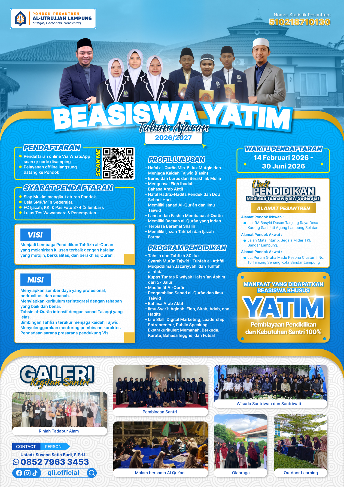
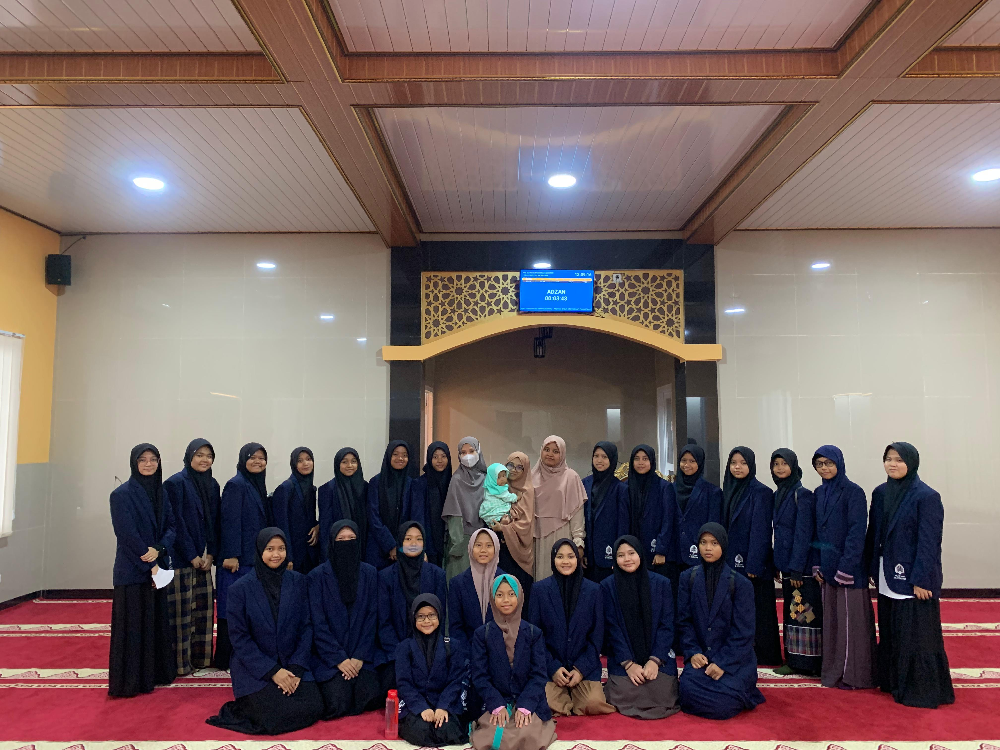

Penerimaan Peserta Didik Baru
& Pindahan
Pondok Pesantren Tahfizh Al-Qur’an & Bahasa Arab Aktif. Mencetak Generasi Qurani yang Mutqin, Berkualitas, dan Berakhlak Mulia.

Download Flyer{kind=link}
Tentang Ponpes Al-Utrujjah
YPD Quranic Learning Indonesia
Mencetak Generasi Mutqin
PONPES AL-UTRUJJAH adalah Lembaga Pendidikan Tahfizh al-Qur'an yang fokus melahirkan lulusan terbaik dengan hafalan yang mutqin, berkualitas, dan berakhlaq Qurani.
Visi
Menjadi Lembaga Pendidikan Tahfizh al-Qur'an yang melahirkan lulusan terbaik dengan hafalan yang mutqin, berkualitas, dan berakhlaq Qurani.
Misi
- Menyiapkan sumber daya yang profesional, berkualitas, dan amanah.
- Menyiapkan kurikulum terintegrasi dengan tahapan yang baik dan benar.
- Tahsin al-Qurân intensif dengan sanad Talaqqi yang jelas.
- Bimbingan Tahfîzh terukur menjaga kaidah Tajwîd.
- Menyelenggarakan mentoring pembinaan karakter.
- Pengadaan sarana prasarana pendukung Visi.
Pembina & Penjamin Mutu Pesantren
Ust. Suseno Setio Budi, S.Pd.I
Pembina
- Alumni STIT Dârul Fattâh
- Founder QLI
Ust. Tri Saputra, S.E.
Penjamin Mutu
- Pewaris Sanad Al-Qur’ân Riwâyah Hafsh
- Pewaris Sanad Kutub & Mutun Ilmiyyah
- Penulis Kitab Tajwîd & Qirâ’ât
Program Pendidikan
Tahsin & Tahfizh 30 Juz
Sanad Al-Qur’an & Tajwid
Bahasa Arab Aktif
Ilmu Syar’i Terpadu
Maqâmât Al-Qurân
Life Skill & Digital Marketing
Ekstrakurikuler Sunnah
Syarah Mutûn Tajwîd
Profil Lulusan Al-Utrujjah
- Hafal Al-Qurân Min. 5 Juz Mutqin
- Beraqidah Lurus & Berakhlak Mulia
- Menguasai Fiqh Ibadah & Bahasa Arab
- Hafal Hadits Pendek & Do’a
- Memiliki Sanad & Bacaan Indah
- Ijazah Tahfizh & Ijazah Formal

Fasilitas Santri
Pengajar Bersanad
Tempat yang Nyaman
Makan 3x Sehari
Ijazah Sanad & Formal
Pembinaan Karakter
Pendaftaran & Biaya
Syarat Pendaftaran
- Siap Mukim mengikut aturan Pondok.
- Usia SMP dan SMA Sederajat.
- FC Ijazah, KK, & Pas Foto 3x4 (3 lembar).
- Membayar biaya pendaftaran Rp 200.000.
- Lulus Tes Wawancara & Penempatan.
Beasiswa Spesial: Keluarga kurang mampu mendapatkan potongan SPP Rp 400.000.
Beasiswa Anak Yatim: Tersedia kuota khusus untuk 10 anak yatim.
Rincian Biaya
| Kategori Biaya | Jumlah |
|---|---|
| Uang Pangkal | Rp 6.855.000 |
| Uang Bangunan | Rp 2.000.000 |
| SPP + Catering | Rp 1.200.000 |
Informasi & Alamat
Alamat Ikhwan (Putra)
Jln. RA Basyid Dusun Tanjung Raya Desa Karang Sari Jati Agung Lampung Selatan.
Alamat Akhwat (Putri)
Jalan Mata Intan X Segala Mider TKB Bandar Lampung.
Pendaftaran via WhatsApp
085279633453
Ikuti Media Sosial Kami
Dapatkan update terbaru seputar kegiatan santri dan kajian Islam melalui sosial media resmi kami.